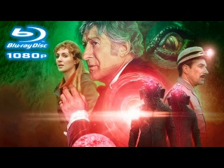
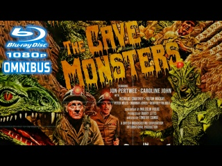
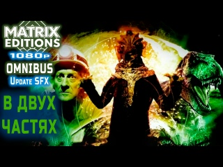
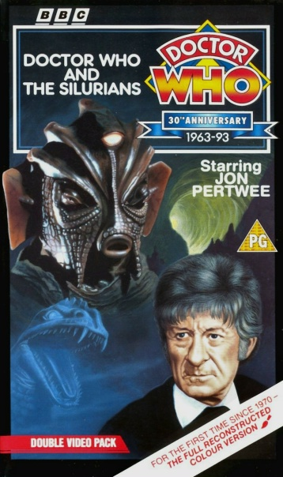
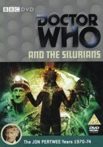
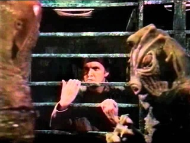

помощник
Субтитры: Русские и Английские |  |
|---|---|
Субтитры: только Английские |  |
с обновлением визуальных эффектов (cunningmunki) Субтитры: отсутствуют |  |
| Все эпизоды сохранились в ч/б * Цвет восстановлен (PAL) |
|---|
помощник |
В научно-исследовательском центре Венли Мур происходят странные утечки энергии и нервные срывы среди персонала — будто сама земля что-то возвращает из прошлого. Доктор, Лиз и ЮНИТ спускаются в пещеры и сталкиваются с силурианцами: древними хозяевами Земли, которые проснулись и видят в людях захватчиков. Это первая встреча с расой, у которой есть моральное право считать планету своей, и Доктор пытается удержать обе стороны от войны. Важная фишка серии — конфликт не «хорошие против плохих», а столкновение двух цивилизаций с равной правотой, где любое решение будет стоить чьей-то жизни. Здесь же впервые появляется Бесси — жёлтая машина Доктора, которая станет его фирменным транспортом в этой эпохе.
 VHS - июль 1993 |  DVD+Boxset - 14 января 2008 |  Blu-ray - 3 марта 2025 * Версия в нашей группе |
|---|
